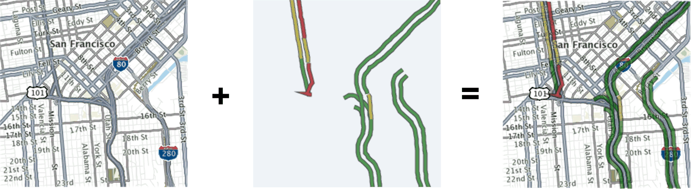
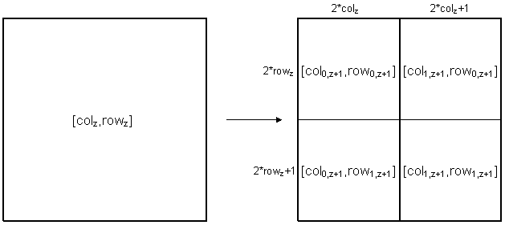

public abstract class MapProvider
extends java.lang.Object
Example Overlaying the (opaque) basemap tiles with (transparent) traffic tiles:

Overlays should be provided in the form of tiles. Each tile has a unique index parameters [zoom,col,row].
To provide the custom overlay a method get(int zoom, int column, int row)
has to be implemented and it should return an image of the requested tile.
The indexing parameters [zoom,column,row] are a function of the geo
location of the tile. The foundation of this mapping is the Mercator
projection. It allows a point on a sphere (λ, φ) described by
latitude and longitude to be mapped to a point on a plane (x,y) using the
normalized Mercator projection:
{λ, φ} -> [-1, 1] x [-1,
1]
x = λ / Π
y = ln(tan( Π/4 + φ/2)) / Π
In addition to the projection, the map resolution is defined in the form of zoom levels. For example at the lowest zoom level 0 the map is 256x256 pixels. At each successive zoom level, the map width and height are doubled i.e. zoom level 1 has 512x512 pixels zoom level 2 has 1024x1024 pixels an so on.
Since at higher zoom levels it would not be efficient to handle the map as a single image, the map is split into tiles. All the tiles have the same size and they form a table with rows and columns. The number of tiles between two zoom levels is always doubled. The relationship of tiles between two consecutive zoom levels is illustrated in the following picture:

Please have a look on the following code to see an example how to calculate the tile index for a particular geo location in application.
public void calculatePosition(int latitude, int longitude, int zoom) {
int p= Math.pow(2, zoom); double x= longitude /Math.PI; x=(x+1)/2;
double y= latitude/Math.PI; y = (log(tan(pi/4.0+latitude/2.0))+1)/2; y = 1 - y;
int column=(int) x*p; int row=(int)y*p;
System.out.println("[zoom,col,row] = " + zoom + "," + col+ "," + row);
}MapUrlProvider| Constructor and Description |
|---|
MapProvider(int resolution,
long validity) |
| Modifier and Type | Method and Description |
|---|---|
abstract javax.microedition.lcdui.Image |
decode(byte[] data)
This method is used to convert data that has been provided by the provider (via the
get() method) into an ARGG integer array. |
abstract byte[] |
get(int zoom,
int column,
int row)
This method retrieves tile image data for the specified zoom, column and row.
|
abstract java.lang.String |
getName()
This method retrieves the name of the map provider.
|
int |
getResolution()
This method retrieves the resolution for the map tiles.
|
long |
getValidityPeriod()
This method retrieves the period for which tiles obtained from this provider are valid measured in milliseconds.
|
abstract boolean |
isTileSupported(int zoom,
int column,
int row)
This method retrieves a boolean value indicating whether a map provider supports a given tile, which is zoom and position dependant.
|
public MapProvider(int resolution,
long validity)
resolution - the request resolution of the tiles provided by this provider. either 128 or 256.validity - the maximum length of time (in milliseconds) the data from this map provider is to be cached.public abstract java.lang.String getName()
public abstract boolean isTileSupported(int zoom,
int column,
int row)
false for the unsupported levels stops an attempt being made on getting the tile.zoom - zoom level of requested tile image A map provider should deliver map tiles at different discrete zoom levels. The zoom levels depend on the map and the range is obtained from MapDisplay.getMinZoomLevel() and MapDisplay.getMaxZoomLevel(). At zoom level 0, the whole world is displayed in a single tile. At each subsequent zoom level, each tile gets split into 4 tiles. So, at zoom level 1, the world is split into 4 tiles, and at zoom level 2, 16 tiles, and so on. This means that the map scale depends on the zoom level and the tile resolution. For example, at zoom level 5 one pixel of a 128x128 pixel tile corresponds to 9.7715 km.
column - column number of requested tile image The number of tiles per column is a function of the zoom level: number of columns=pow(2,zoomLevel). The value can be any number between 0 and number of columns-1, both inclusive.
row - row number of requested tile image The number of tiles per row is a function of the zoom level: number of rows=pow(2,zoomLevel). The value can be any number between 0 and number of rows-1, both inclusive.
true if tile is supported by provider, false otherwise.public abstract byte[] get(int zoom,
int column,
int row)
throws java.io.IOException,
java.lang.InterruptedException
zoom - zoom level of requested tile image A map provider should deliver
map tiles at different discrete zoom levels. The zoom levels depend on the map
and the range is obtained from MapDisplay.getMinZoomLevel() and
MapDisplay.getMaxZoomLevel(). At zoom level 0, the whole world is displayed
in a single tile. At each subsequent zoom level, each tile gets split into 4 tiles.
So, at zoom level 1, the world is split into 4 tiles, and at zoom level 2, 16 tiles,
and so on. This means that the map scale depends on the zoom level and the tile resolution.
For example, at zoom level 5 one pixel of a 128x128 pixel tile corresponds to 9.7715 km.
column - column number of requested tile image The number of tiles per column is a function of the zoom level: number of columns=pow(2,zoomLevel). The value can be any number between 0 and number of columns-1, both inclusive.
row - row number of requested tile image The number of tiles per row is a function of the zoom level: number of rows=pow(2,zoomLevel). The value can be any number between 0 and number of rows-1, both inclusive.
decode(byte[]) in order to obtain an Image.InterruptedException, - if an IO operation is canceled.
The data is assumed to be invalid and is ignored.IOException, - if a fatal non recoverable error occurs. This error is a non-recoverable
error and all MapProviders cease should any one MapProvider throw an IOException.java.io.IOExceptionjava.lang.InterruptedExceptionpublic abstract javax.microedition.lcdui.Image decode(byte[] data)
get() method) into an ARGG integer array.public final long getValidityPeriod()
get() method.
The data's age is determined from the time when the get() method was called.
Ordinarily the get() method is not called if the cached data is less than the value
returned.public final int getResolution()